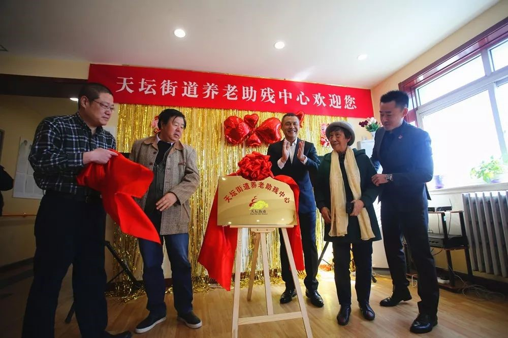
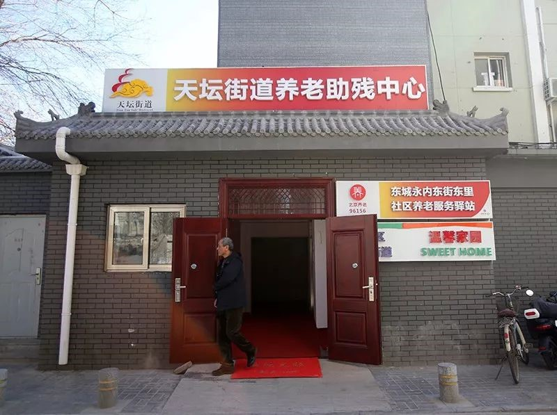
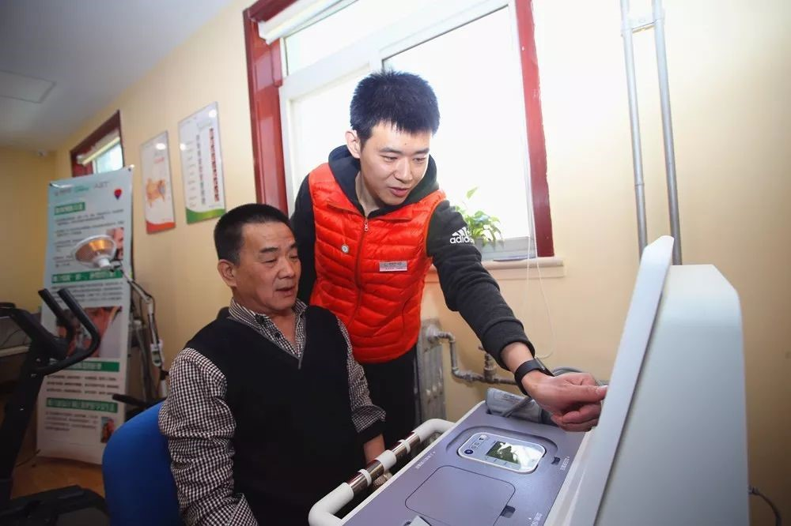
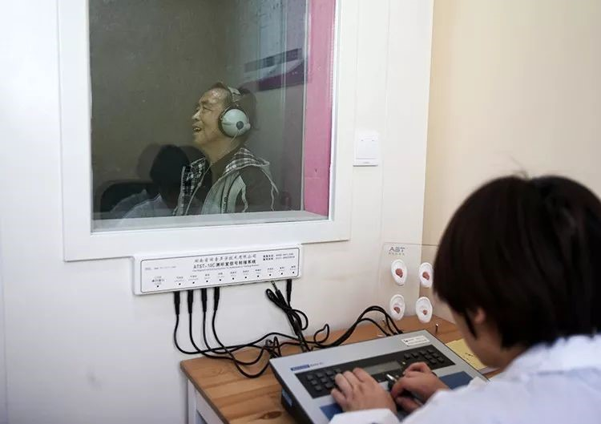
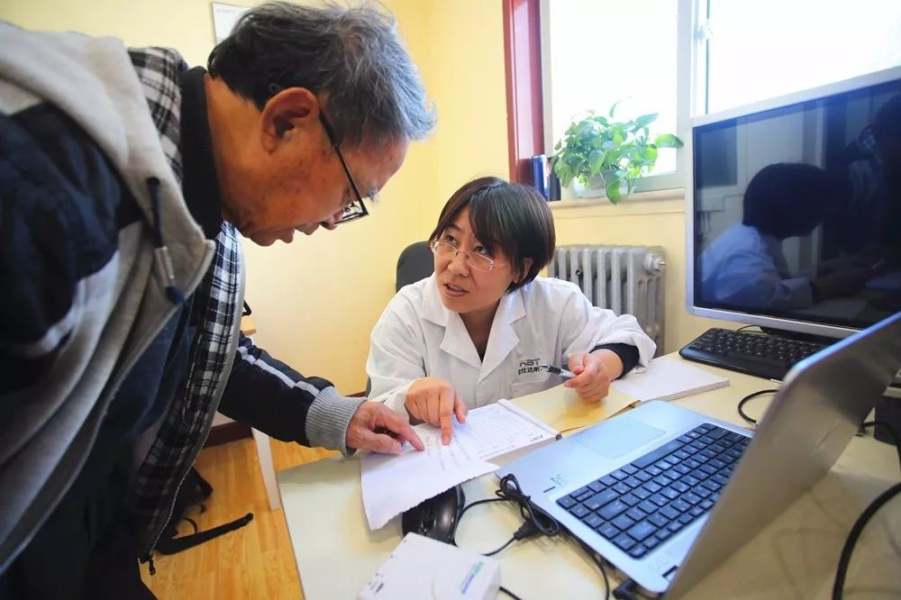
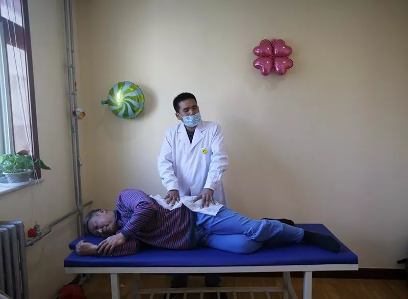
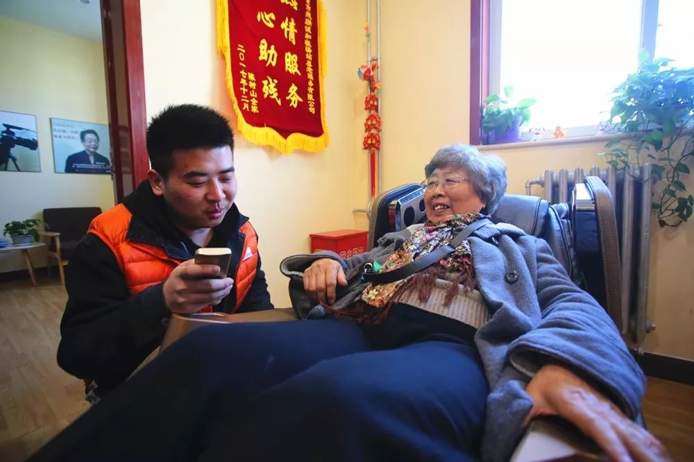
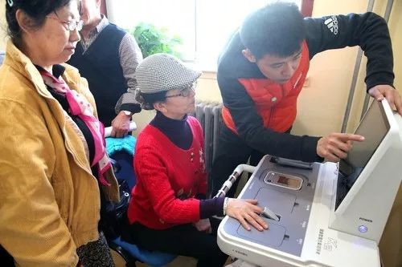
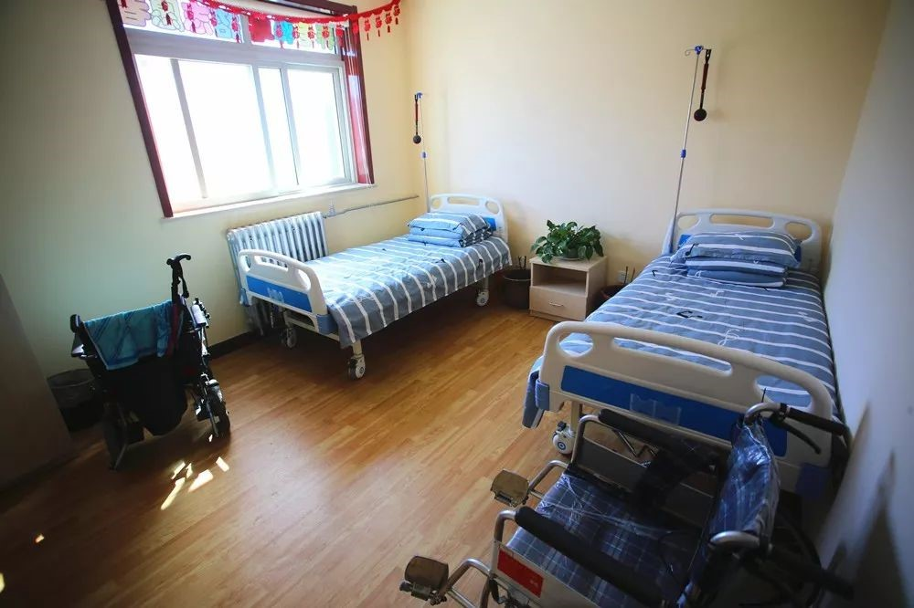

东城首家“老残一体”服务中心投入使用
来源：北京东城
日前，东城区首家“老残一体”服务中心——天坛街道养老助残中心投用，可为附近4500余名60岁以上的老年人和地区2000余名残疾人提供养老助残服务。
天坛街道养老助残中心位于永内东街东里12号，紧邻天坛公园南门，是一座集“智慧养老、便民服务、健康指导、残疾康复”于一体的综合性服务中心。
中心包括二层、三层两层，面积共计800平方米，二层主要提供养老照料服务，三层主要提供助残服务。中心分为智慧养老区、文化娱乐区、健康指导区、烘焙体验区、心目影院室、康复室等多个功能区域。
走进中心，大门右侧配有可容纳11人的直梯，直梯三面安装扶手，行动不便的老人和残疾人可乘坐直梯上楼。二层的养老驿站地面上铺设盲道，倚墙安装了扶手，为老人、残疾人活动提供便利，墙面上还张贴了可爱的卡通图案，整体显得格外温馨。
 在智慧养老区，一位老人正在用智能体检机体检。老人踏上体检机，向工作人员递上身份证，工作人员将身份证放在感应区后，机器上显示出老人的身高、体重、血压、体温、血氧饱和度等人体成分数据，十几秒后，一份老人的体检报告打印出来。在此功能区还能为老人提供听力筛查等服务。
心目影院室里正播放影片《家风》，10余名盲人正在体验“观影”。心目影院主要是通过语言描述电影中画面信息部分，弥补视觉障碍带来的信息缺失。“能和其他残疾朋友一起坐在心目影院体验一次‘观影’，我感觉特别幸福。虽然我们看不见，但是我们可以通过听声音想象画面。中心为我们提供了一个交友和交流的平台，丰富了我的文化生活，以后我一定常来。”一位观众说。
健康指导区里，三位老人正体验盲人按摩、足底按摩、修脚等服务。烘焙教室里，十余名残疾人与老人正在老师的指导下制作和烘焙糕点、饼干。
“天坛街道养老助残中心是天坛街道在养老助残服务方面的一个创新之举，可以实现养老和助残资源互补与共享，为老人提供更加专业的生活照料服务和身体康复指导。”天坛街道相关负责人表示。
 养老中心运营负责人景婷婷介绍，中心在试运营期间已经为地区老人提供了500余次服务，包括配送老年餐、精细保洁、修脚、足疗、按摩等项目，正式运营以后将为地区老人提供更加多元和优质的服务，组织更加丰富的文化活动。